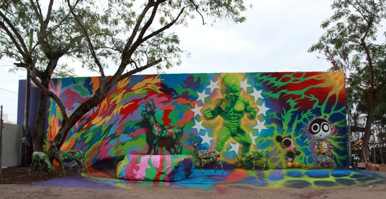
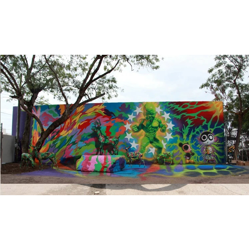

Wynwood Baby Hulk / Temper Tot, 2010
Mural installed at Wynwood Walls during the 2010 Art Basel expansion, introducing Ron English’s Baby Hulk / Temper Tot as one of the site’s defining early POPaganda images.

Work details
Description
Installed during Wynwood Walls’ 2010 Art Basel expansion, this mural introduced one of Ron English’s most recognized POPaganda figures: a hyper-muscled Baby Hulk / Temper Tot glowing against a camouflage field and surrounded by Delusionville characters. Early Miami Art Week coverage and Wynwood Walls’ own archive highlight how this piece helped establish the aesthetic identity of the Walls during their formative years, becoming one of the site’s most photographed works.
Gallery

Sources
- Wynwood Walls – Ron English artist page
- Miami New Times – Wynwood Walls expands with Ron English & Dearraindrop
- Street Art Avenue – Ron English “Baby Hulk” at Wynwood Walls
- Beyond Square Footage – Ron English “Standing Strong Inside the Walls”
- Miami Niche – Ron English and the unexpected Renaissance landmark work